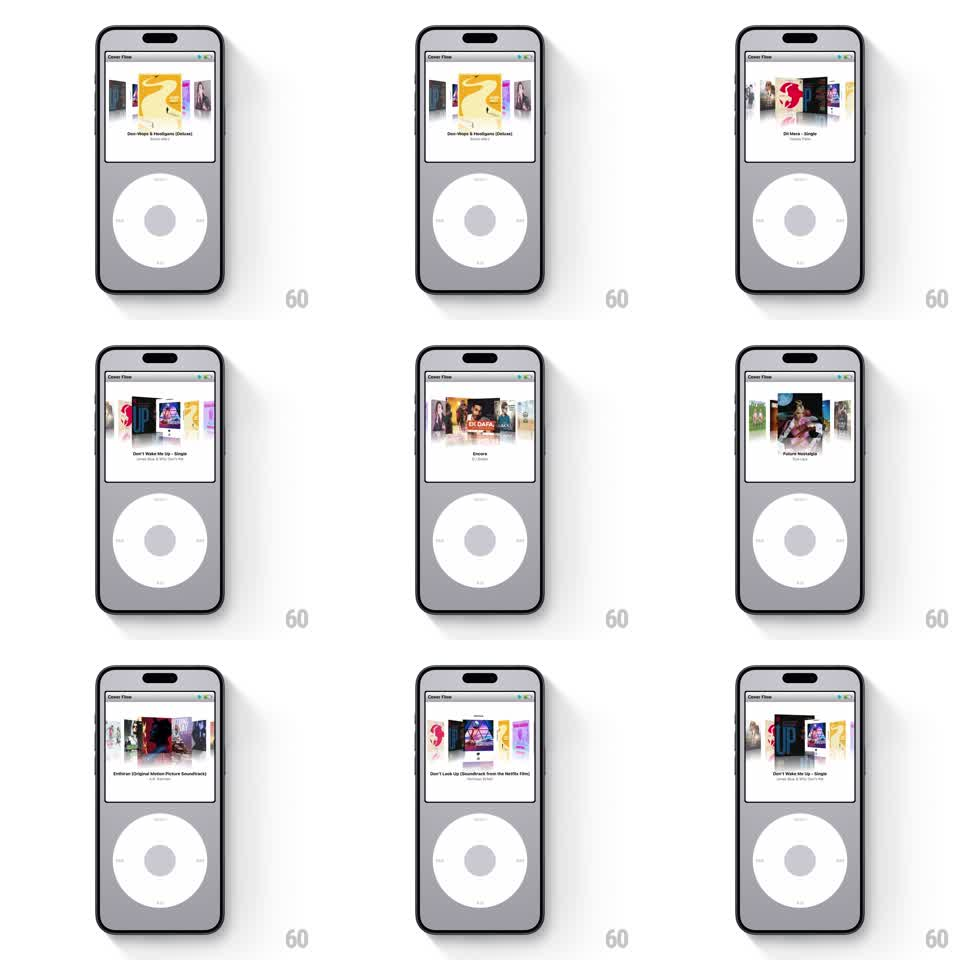

Media
Frame-by-frame

Rebuild this interaction 1:1: Retro's iPod Cover Flow - the click wheel scrubs a 3D carousel of album covers, with momentum, snap-to-center, and the center cover's reflection and title updating as it turns.

Rebuild this interaction 1:1: Retro's iPod Cover Flow - the click wheel scrubs a 3D carousel of album covers, with momentum, snap-to-center, and the center cover's reflection and title updating as it turns. ## Integration Integration: stack-agnostic spec - springs given as stiffness/damping, timed motions as duration + curve; map every value to your framework and animation library of choice. ## Scene An iPod classic rendered on screen, grey: top half a "Cover Flow" display - center album cover flat and forward, neighbors angled away in 3D perspective with floor reflections, album title and artist under the center cover; bottom half the click wheel (MENU top, skip back/forward at the sides, play/pause bottom, center select button). ## Motion spec Pattern: wheel-driven Cover Flow carousel with inertia. - Circular drag on the wheel maps angular distance to carousel rotation 1:1 (one full wheel turn advances ~5 covers); covers rotate around a horizontal axis: center at 0 degrees, neighbors at +/- 65 degrees, spacing tightens with distance. - Release with velocity: the carousel coasts (friction ~0.92 per frame) then snaps to the nearest cover (spring ~300/18, slight overshoot). - The center cover is largest and flat; as a cover leaves center it rotates away and slides aside (translateX follows the arc), its reflection dimming. - Title and artist crossfade (150ms) only after the carousel settles on a new center - not while spinning fast. - Fast spins blur the passing covers slightly (motion blur or 0.6 opacity on off-center covers). ## Calibration - The wheel is the input surface - no swiping the covers themselves; the tactile fiction is the wheel. - Center cover always faces the viewer dead-on at rest; any settle that leaves it tilted is a bug. ## Reduced motion Carousel advances one cover per wheel click detent (150ms slide, no coasting). ## Don't miss - Reflections mirror each cover's current rotation, not just the flat state. - The screen's glass sheen and the wheel's printed glyphs are static - only the Cover Flow world moves.